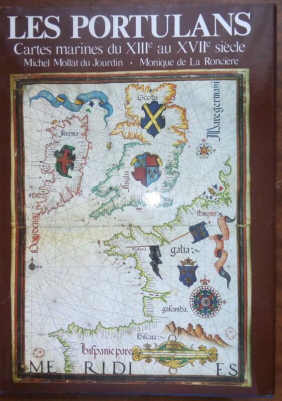

Если любому из нас задать вопрос, что такое портолан, то практически все скажут в ответ, что это морская карта, а некоторые даже уточнят, что это морская карта эпохи Возрождения. И удивятся, если услышат бесстрастное «Ответ неверный».
На самом деле портолан – это текстовый документ, сборник описаний портов и морских путей между ними.
Нам трудно сказать, когда итальянский термин портолано (portolano) получил второе значение, широко распространенное в наше время, а именно, стал обозначать морские навигационные карты XIII-XVI вв. В отечественной литературе на этот счет невообразимая путаница и каша. Мало того, что мы до сих пор не можем определиться, как правильно писать: портолан (следуя исторически первому итальянскому первоисточнику – portolano), или портулан (опираясь на более позднее испанское portulano, или французское portulan). Наши базовые справочные издания – Большая советская энциклопедия и Большая российская энциклопедия – называют этим словом морские навигационные карты определенной эпохи. И не только наши издания. Вот эта замечательная книга из моей библиотеки, она о том же.

Мы уже сказали выше, это совсем не так. Портолан – это подобие античных периплов (см. предыдущий пост). Подобно периплам он использовался для чисто практических целей, содержал накопленные веками сведения о прибрежных водах посещаемых моряками стран. Так, итальянские портоланы содержали описания берегов и островов Средиземного моря, побережья Атлантического океана до Слюйса во Фландрии, южных берегов Англии и Ирландии. Более поздние портоланы включали рассказы об атлантическом побережье Африки и Канарских островах. По сути, портоланы являлись словесным выражением результатов съемки берегов с использованием компаса. А так как компас в Европе, по мнению большинства ученых, появился в XII веке, то и появление портоланов должно относиться к этому времени.
Конечно, результаты съемки побережья выражались не только словесно, но и графически, на картах. Таким образом портоланы и морские карты дублировали и взаимно дополняли друг друга.Поэтому в нашей литературе появились такие термины, как словесный портолан и графический портолан, как, например, у И.В. Волкова в его работе о локализации итальянской фактории Копы.
Есть еще одна терминологическая тонкость. Некоторые предлагают различать морские карты (carte marine) и навигационные карты (carte nautique). Мы в такие тонкости вдаваться не будем, это уже, как говорил один мой знакомый балалаечник, пиццикато. В дальнейших наших рассказах мы будем использовать два термина: карта-портолан (иногда по историческим соображениям будет использоваться синоним компасная карта) и портолан.
Тот факт, что портоланы – это не морские карты, а сборник текстовых инструкций для моряков, находит абсолютное подтверждение в названиях документов той эпохи. Ни одна из так называемых компасных карт (тех, что впоследствии стали наывать «карты-портоланы») в Средиземноморье не носила название портолан. Да и утверждение, что термин карта-портолан появился в Италии в XIII веке, которое делает, например, H. C. Freiesleben, не находит своего подтверждения. В попытке найти основания для этого утверждения пришлось потратить уйму времени и перелопатить десятки статей, однако безрезультатно.
В Англии чаще всего используют термин portolan chart, иногда его вариант portulan chart, неявно подчеркивая, что эти карты служат дополнением к текстовым руководствам, портоланам. Этот термин появился сравнительно недавно, не раньше конца XIX века. До этого использовался все тот же термин "portolan", внося путаницу между текстовыми и графическими документами. Новый термин сравнительно прочно укоренился в английской литературе, но к единодушию так и не привел. В 1881 году Артур Бресинг использовал название локсодромные карты, а в 1925 г. Макс Экерт предложил назвать карту-портулан картой румбовых линий ("Rhumbenkarten").
Французы, итальянцы, португальцы и испанцы предпочитают термины cartes nautiques, carte nautiche и cartas nauticas, но это слишком общие термины, которые не позволяют выделить карты-портуланы из общего массива морских карт.
Очень широкое распространение получило утверждение, что нанесенные на картах-портуланах «розы ветров» и появление в XIII веке в Европе компаса дали повод назвать карты-портуланы морскими компасными картами.
Приведем на этот счет два отрывка из работы известного нашего географа Дмитрия Николаевича Анучина (1843-1923) Старинная морская карта на пергаменте из собрания графа А.С. Уварова
Другое названіе, применяемое къ нимъ, это компасныя карты, такъ какъ появленіе ихъ приблизительно совпадаетъ съ распространеніемъ среди итальянскихъ моряковъ знакомства съ компасомъ, и такъ какъ онѣ всегда снабжены характерной сѣтью, не изъ меридіановъ и параллелей, какъ наши карты, а изъ линій, соотвѣтствующихъ румбамъ компаса, расходящихся (обычно въ числѣ 32) изъ нѣсколькихъ точекъ на картѣ и затѣмъ перекрещивающихся между собою.
…
И тѣмъ не менѣе, первыя морскія карты ХIIІ-ХІV вѣковъ явились, повидимому, безъ помощи компаса, и тогдашніе съемщики береговъ руководились въ опредѣлеыіи направленій исключительно положеніемъ солнца, благо климатъ Средиземья давалъ возможность большую часть года слѣдить днемъ за видимымъ движеніемъ свѣтила по небесному своду. Что направленія наносились тогда не по компасу, въ пользу этого говоритъ то обстоятельство, что, какъ можно было убѣдиться, компасныя розы, изображенная на этихъ картахъ, указываютъ настоящей сѣверъ, а не магнитный, т.-е. на нихъ не отражалось склоненіе магнитной стрѣлки.
(С этим утверждением Анучина, впрочем, не согласны ученые более позднего периода).
Но о картах у нас рассказ еще впереди, сейчас же вернемся к портоланам. Первоначально портолан – это инструкция для каботажного, прибрежного плавания. И так как важнейшим элементом этого плавания были морские гавани, или порты, то их перечисление и детальное описание являлись основным элементом портолана. Следовательно, содержание портолана полностью соответствовало его названию, это была «книга портов».
Первым по значимости среди портоланов стоит "Компассо да Навигаре" (Il compasso da navigare ; в одном из списков манускрипта «Lo Conpasso de navegare»), одно из старейших руководств, составленное около 1250-1265 гг.
Постепенно в тексты портоланов стали включать сведения не только о каботажных маршрутах, но и о переходах между различными портами напрямую, не вдоль берега, а открытым морем. Эти переходы назывались латинским словом transfretus (transfreto – переплывать, переправляться, пересекать) или на итальянском a golfo lanciato, что означало пересечение моря по прямой линии, или чаще peleggio (иногда pileggio, pareggio), как у Данте, например:
non è pareggio da picciola barca
quel che fendendo va l'ardita prora,
né da nocchier ch'a sé medesmo parca.
Морской простор не для худого струга
Тот, что отважным кораблем вспенен,
Не для пловца, чья мысль полна испуга.
Dante Alighieri, Divina Commedia , Paradiso, canto XXIII, 67-69
Перевод Михаила Лозинского
В портоланах стали указывать расстояние между пунктами для каждого направления - peleggio - и курс, который следует держать. Вот, например, несколько строчек из Il compasso da navigare с указанием расстояний:
De lo capo de Matrega a Matrega XX millara entre greco e tramontana.
От мыса Матреги до Матреги – 20 миль на ССВ. (24,6 км)
De lo capo de Matrega a Pondicopera XL millara per tramontan.
От мыса Матреги до Пондикоперы – 40 миль (49,2 км) на С
De Pondicopera a Copa LX millara per levante ver lo greco pauco.
От Пондикоперы до Копы – 60 миль (73,8 км) на В с отклонением в 1/128 окружности к С
Мили здесь, как и на масштабе карт-портоланов, короткие – 1230 м.
Мы продолжим изучение текстовых руководств для мореплавателей в следующий раз, когда расскажем об английском предшественнике современной лоции – руттере.